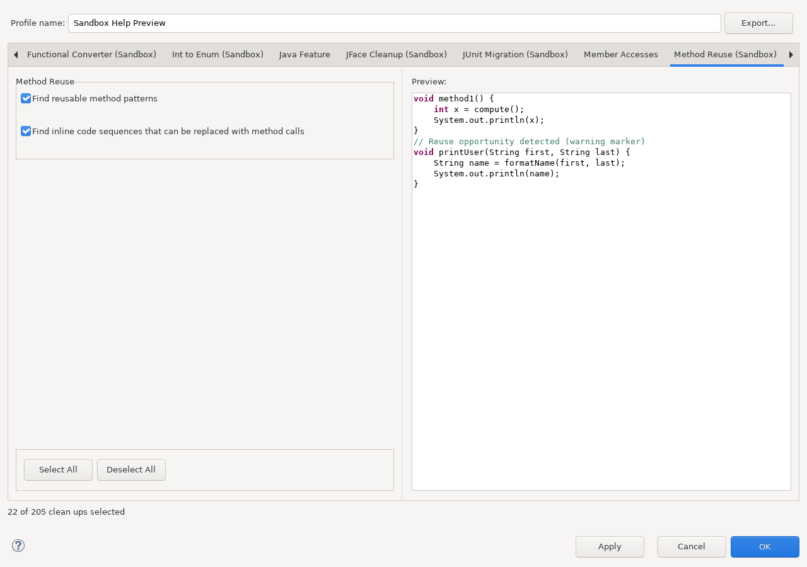

Open Java > Code Style > Clean Up, edit a dedicated profile, and select Method Reuse (Sandbox).

The minimum repeated sequence length can be set to three, four, or five statements. The default is three. A shorter repeated fragment is deliberately ignored. The cleanup chooses the candidate with the greatest estimated reduction, preferring longer sequences and then the earliest source occurrence when values tie.
void first(String value) {
String text = value.trim();
text = text.toLowerCase();
System.out.println(text);
}
void second(String input) {
String text = input.trim();
text = text.toLowerCase();
System.out.println(text);
}
void first(String value) {
extractedSequence(value);
}
private void extractedSequence(String value) {
String text = value.trim();
text = text.toLowerCase();
System.out.println(text);
}
void second(String input) {
extractedSequence(input);
}
Sandbox performs only candidate discovery. The actual transformation is Eclipse JDT's Extract Method refactoring with duplicate replacement enabled. JDT determines parameters, a possible return value, static context, checked exceptions, legal control flow, destination, method-name conflicts, and which occurrences are semantically replaceable. A textual or coarse structural match alone never authorizes a source change.
The common standard-LTK file selection and code comparison are documented in Cleanup preview model.
The configuration image is generated from a real Eclipse workbench by
SandboxHelpScreenshotsSWTBotTest. Run the Maven profile
help-screenshots under Xvfb after UI changes.